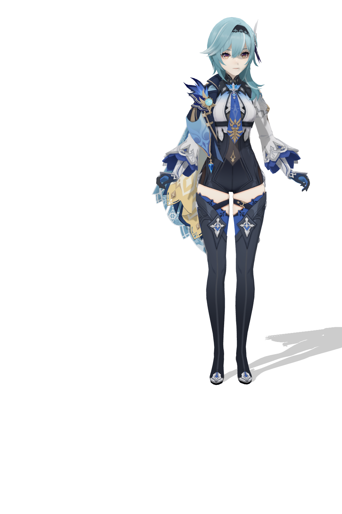
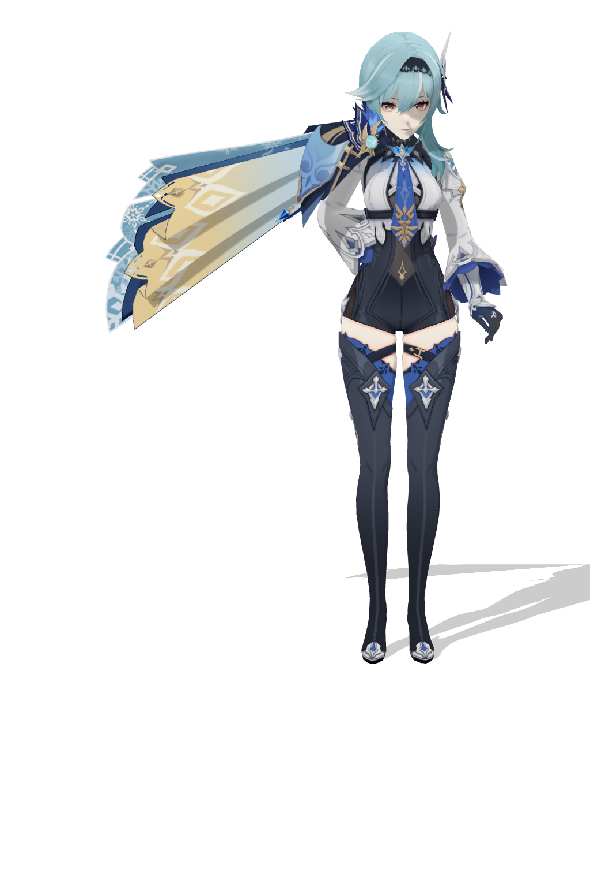
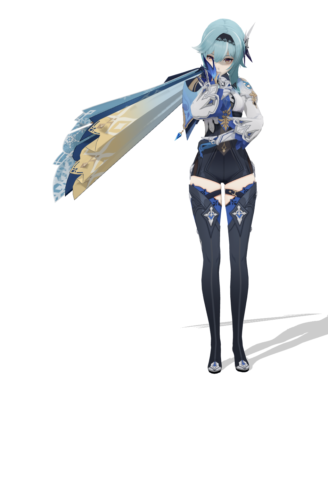
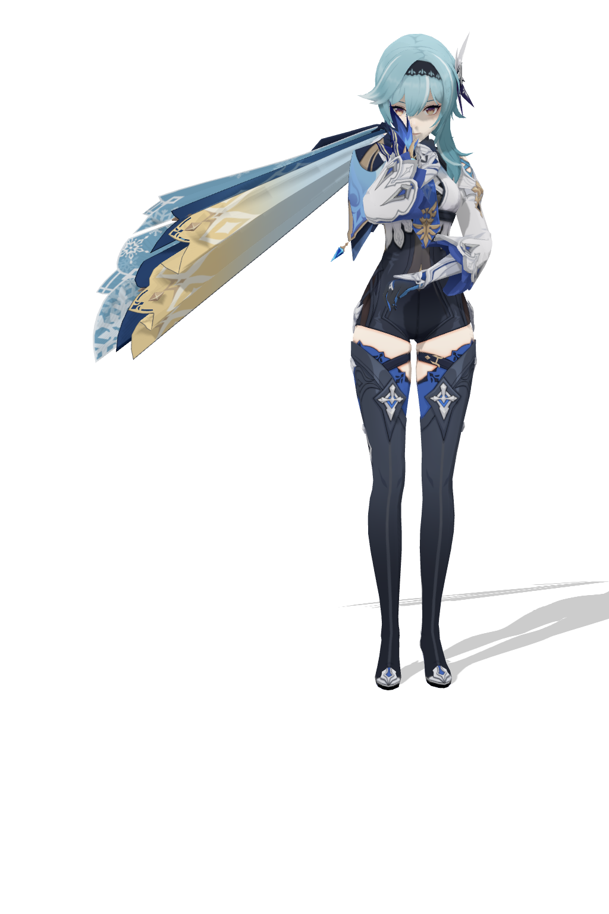

created2026-06-17T15:58:24.566ZmodelMMD/优菈_by_原神_339146e6e418d79e85a515b26414c0b0/优菈.pmxvmdimgToAction/outputs/vmd/eula_thinking_composite_elegant_v7_torso45.vmdright hand gatefail

f0right wrist to chin: 370.3pxleft wrist to waist: 185.8px

f60right wrist to chin: 241.1pxleft wrist to waist: 146.8px

f120right wrist to chin: 78.8pxleft wrist to waist: 143.0px

f178right wrist to chin: 85.2pxleft wrist to waist: 112.0px